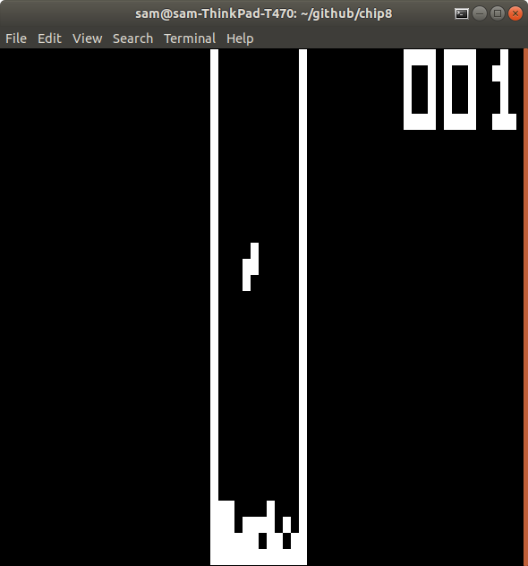
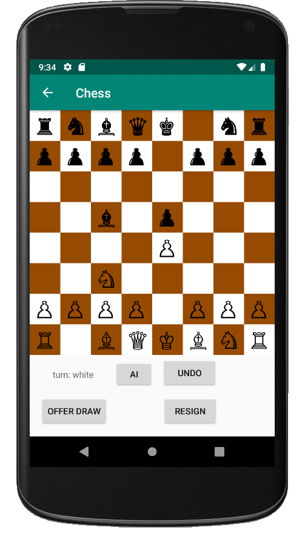
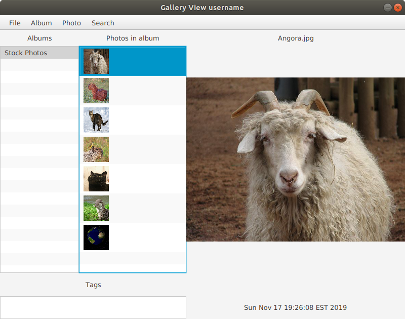
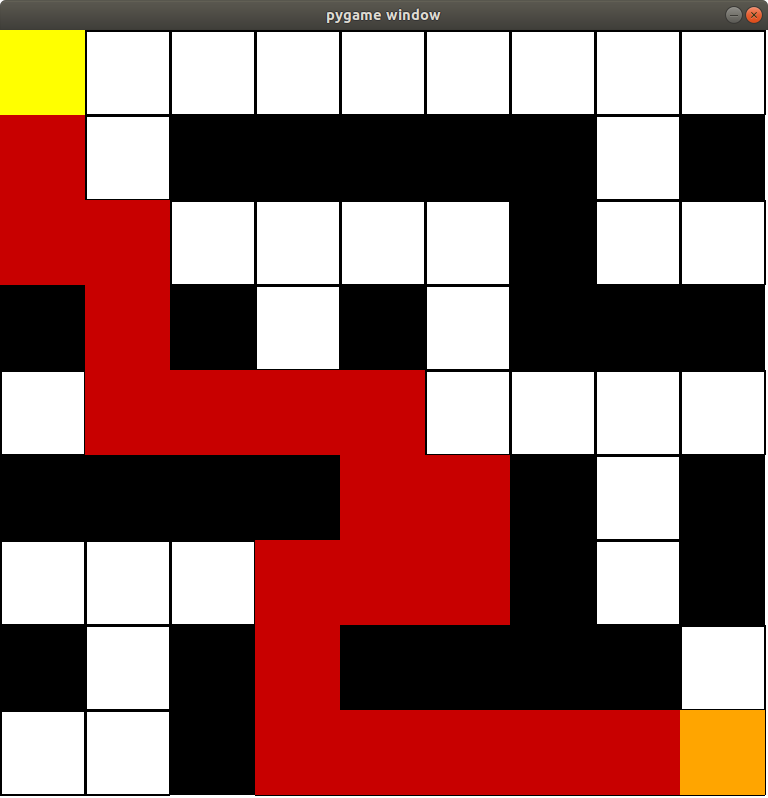

CHIP-8 Emulator
- 8-bit emulator written in C using ncurses for terminal display
- Used multiple threads for implementing timers and reading keyboard input
- Can run pre-existing Chip-8 programs

Chess Game
- Two player mobile Chess game written in Java using Android Studio
- Completed games can be saved and replayed back
- Undo button to play last move differently

Image Gallery
- Image Gallery written in Java using JavaFX
- Uses the Model view controller design pattern
- Uses FXML for the user interface
- Serialization is used for saving user profiles
- Supports multiple users with different folders for each user
- Javadocs created for the entire program

Repeated Forward A* Pathfinding
- Implementation of the A* algorithm on a gridworld where the agent doesn’t know the contents of a grid cell until it attempts to enter it
- Written in Python using NumPy with a Pygame user interface